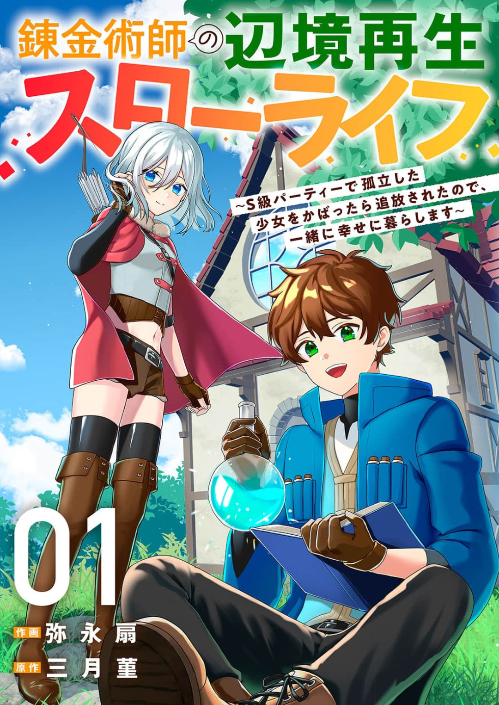

You're banished too!" Alchemist Nico Flamel is banished from his S-rank party along with a cool girl with the 'red eyes' that are shunned in this world, after protecting her. The two banished men form a new party and begin living together in a small atelier in a remote town...!? A laid-back, happy slow life begins for the kind-hearted alchemist who is unaware of his own abilities and the cool, aloof girl--